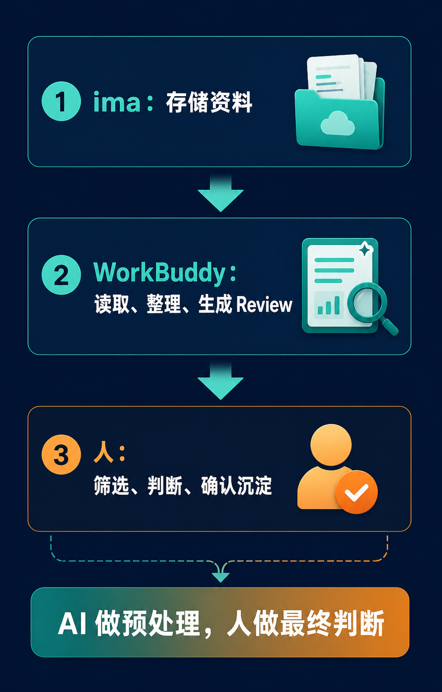
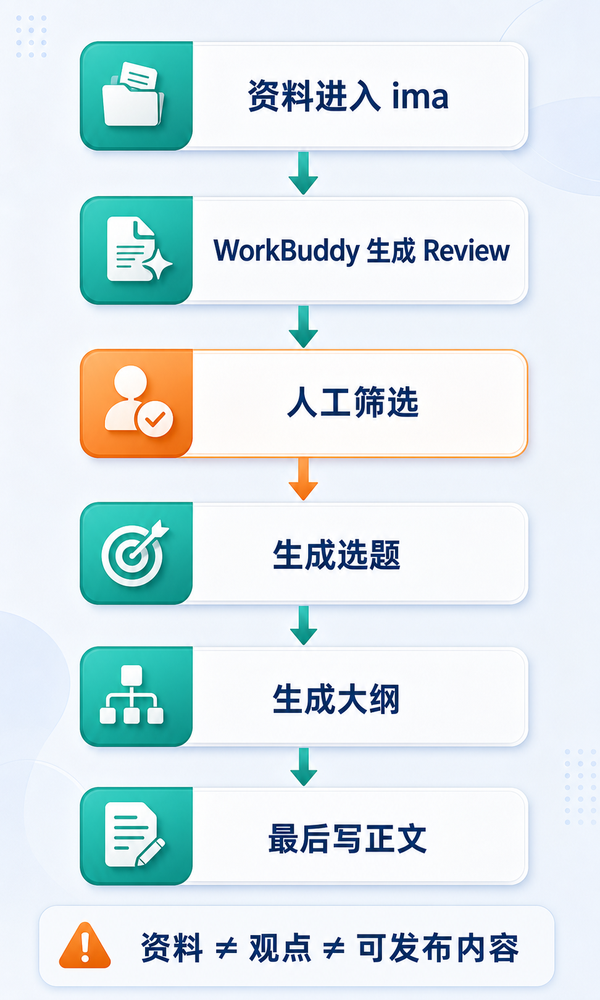

很多人并不是没有资料，而是资料散得到处都是。
微信收藏里是一批文章，腾讯文档里是一批项目资料，电脑文件夹里堆着 PDF，会议纪要分散在聊天记录和录音中，视频看完没有字幕，灵感则留在备忘录里。需要使用时，往往什么都找不到。
这也是为什么不少人兴冲冲地安装 Obsidian，研究 Markdown、双链、模板和插件，最后却只得到一个更精致的“第二垃圾桶”。工具负责收纳，却没有人继续筛选、整理和复用。
对于主要处在中文办公环境、又不想先学习复杂知识管理体系的人，更容易落地的起点是：
ima 负责存储，WorkBuddy 负责预处理，人负责最终判断。
这篇文章从零开始，完整讲清连接、建库、导入、整理、复用、远程触发、安全边界和后续自动化。你不需要第一天就搭出一套宏大的“第二大脑”，只要先让第一批真实资料被处理一遍。

Obsidian 很强：本地 Markdown、双链、模板、插件、目录和图谱都适合长期沉淀。但它更像一个能力极强的仓库，仓库本身不会替你整理货架。
真正困难的是资料进入之后的第二步：
如果这些问题没有答案，知识库越大，检索和判断的负担就越重。普通人的第一步不应是追求“高级”，而应是让资料进入系统后，能够被初步读取、归类、摘要和筛选。
一个稳健的个人知识库包含三个角色：
很多人一开始就想让 AI 自动读取、自动分类、自动总结、自动归档、自动写成正式笔记。看上去效率很高，实际很危险。长期知识并不是格式化文本，它包含真实性、用途、价值和时效性的判断。
顺序一旦颠倒，知识库很容易变成一堆结构漂亮、却缺少真实用途的 AI 文本。
在电脑上打开 ima 官网，下载 Mac 或 Windows 客户端，用微信扫码登录。手机端可以在微信中搜索“IMA 知识库”小程序。
这里有一个关键条件：ima 与 WorkBuddy 必须使用同一个微信账号登录。账号不一致，是后面“看得到连接、读不到知识库”的常见原因。
打开 WorkBuddy，进入左侧的“资料库”，选择“ima 知识库”，点击“立即前往授权”。随后用微信扫码登录，并确认授权。
完成后，WorkBuddy 通常可以：
可以用这条最简单的指令验证连接：
帮我列出 ima 知识库中所有的知识库名称。如果返回了正确的知识库列表，连接就已经打通。
连接成功后，有两种常见方法把 ima 资料带入任务：
WorkBuddy 处理完成后，在右侧产物区找到需要的文件，选择“上传到云端 → ima 知识库”。根据实际权限，可存入个人、共享或订阅类知识库。
至此，“读取 → 处理 → 存回”的闭环才算完成。
第一版不要建立资料库、领域库、卡片库、灵感库、阅读库、客户库、复盘库等十几个分类。分类越多，放弃的概率越高。
只建三个：
放外部资料：文章、网页、PDF、报告、课程、视频字幕、访谈稿和会议录音转写。
放正在推进的事情：公众号选题、客户项目、产品想法、课程计划和商业方案。
放自己的成果：文章草稿、选题池、复盘、总结、观点卡片和方法论。
这三个库足以建立最基本的流向：外部输入进入资料库，与具体行动有关的内容进入项目库，经过判断形成的成果进入输出库。
在 ima 中创建时，只需进入左侧“知识库”，点击“+”，输入名称并创建。
知识库最常见的失败方式，是第一天就把几百条微信收藏、浏览器书签、几十个 PDF 和历史笔记全部倒进去。这不是搭知识库，而是把旧房子的杂物原样搬进新房。
建议第一批不超过 20 条，例如：
这一步的目标不是“建成一个大库”，而是验证三个问题：ima 能否存好，WorkBuddy 能否读出并整理，你是否愿意继续使用整理结果。
常见入库方式包括：
注意：直接在临时对话中发送文件，不等于文件已经进入知识库。必须在知识库内部完成上传，才算真正入库。
请读取 ima 知识库中的「01-资料库」。
帮我整理最近上传的资料，并按主题分组。
每条资料包含：标题、一句话摘要、核心观点、适合归入的主题、是否值得精读。
不要生成最终文章。
不要替我删除、移动或覆盖任何资料。这个任务把杂乱资料变成可快速扫读的清单，让你区分值得精读、临时参考、以后再看和不该入库的内容。个人知识库的第一道关卡不是收藏，而是筛选。
请读取 ima 知识库中的「02-项目库」。
围绕「我的当前项目」整理一份项目资料包。
输出：项目背景、已有资料、关键问题、可用素材、缺失信息、下一步行动。
不要替我做最终决策，也不要生成正式方案。它把散落在腾讯文档、备忘录、微信收藏和会议纪要中的内容拉到同一个视角，让人判断项目缺什么、哪些素材可用、哪些只是噪音。
请读取 ima 知识库中的「01-资料库」和「03-输出库」。
帮我生成 10 个适合公众号或 X 的选题。
每个选题包含：标题、核心观点、可引用资料、适合角度、风险点。
不要直接写成完整文章。“不要直接写完整文章”很重要。先生成选题候选、素材包、观点对照和风险点，通常比一句“帮我写爆款文章”更可靠。
资料不等于观点，观点不等于文章，文章也不等于可以发布的内容。
更稳的流程是：

流程看似多了几步，却能避免最大的返工：产物看起来完整，但事实、观点和用途从未经过判断。涉及商业、法律、医疗、投资等高风险内容时，更不能让 AI 直接给出最终结论。
今天收藏的 AI Agent 文章，下周可以成为教程的参考资料，下个月可以变成工具分享的案例，三个月后还可以支撑个人方法论。只有资料不断参与新的任务，它才是知识；存进去后再也不看，只是换了一个收藏夹。
建议每周生成一次 Review：
请读取 ima 知识库中本周新增资料。
生成一份 weekly review。
包含：本周新增内容、重复主题、值得精读的资料、可发展成文章的选题、需要补充的信息、下周行动建议。
不要删除、移动或覆盖任何资料。每周固定处理一次输入，比持续无节制地收藏更有价值。
WorkBuddy 可以通过微信、企微、QQ、钉钉、飞书等入口远程触发任务，适合在不在电脑前时完成只读搜索和初步整理。
例如查资料：
请在 ima 知识库中查找与「AI 工作流」相关的资料。
只读取，不修改。
输出相关资料标题、一句话摘要、来源位置，以及最值得继续看的 5 条。或者整理会议：
请读取今天新增的会议转写内容。
整理会议主题、讨论要点、明确结论、待办事项、负责人、截止时间和待确认问题。
结果保存为 Review，不要生成正式文档。远程任务的原则是：只做低风险处理，正式修改必须回到电脑前确认。
AI 知识库不是保险柜。以下内容必须谨慎：
必须处理时，先脱敏：客户名改为“客户 A”，删除手机号，模糊合同金额，内部资料只保留结构、不保留原文。
对初学者最安全的原则是：能公开发布的资料可以优先进入；不能公开发布的资料，先不要进入自动化流程。
命名的目的不是好看，而是以后能够找回来。可以采用：
日期_主题_类型_版本
2026-08-05_AI知识库_周复盘_v1避免“资料整理”“AI 总结”“最终版”“最终版2”这类无法检索和判断的名字。
请读取 ima 知识库中的「01-资料库」。
按主题整理最近新增资料。
每条输出：标题、一句话摘要、核心观点、可引用内容、相关主题、是否值得精读。
不要删除、移动或覆盖任何资料。请读取 ima 知识库中的「02-项目库」。
围绕「项目名称」整理项目资料包。
输出：项目背景、已有资料、关键问题、可用素材、缺失信息、下一步行动。
不要生成最终方案。请读取「01-资料库」和「03-输出库」。
围绕「主题」生成 10 个内容选题。
每个选题包含：标题、核心观点、可引用资料、适合角度、风险点。
不要直接写完整文章。请读取最新会议记录。
整理会议主题、背景、讨论要点、明确结论、待办事项、负责人、截止时间和待确认问题。
输出为 Review，不要生成正式对外文件。请读取 ima 知识库中本周新增资料。
生成 weekly review。
包含：新增内容、重复主题、值得精读的资料、可发展选题、待补信息、下周行动建议。
不要删除、移动或覆盖任何资料。正确的进阶顺序是：
一次性任务 → 固定指令 → 固定模板 → 每周复盘 → 自动化 → Skill
不要第一天就做一个“全能知识库助手”。第一个 Skill 只解决一个明确问题，例如资料库整理、会议 Review、PDF 阅读笔记、内容选题或项目资料包。一个流程稳定后，再增加第二个。
当每周复盘已经多次稳定运行，可以设置每周五 17:30 自动读取 ima 新增资料、生成周报并存回知识库。但自动化的输出仍应接受人工检查。
通常是授权了错误的 ima 账号。重新授权，并确认 WorkBuddy 与 ima 使用同一个微信账号。
原因通常不是知识库能力不足，而是指令太模糊。要写清“读取哪个库、关注什么维度、输出什么格式”。
差的指令：
帮我分析一下知识库里的内容。更好的指令：
访问「产品需求」知识库，提炼其中与「用户体验」有关的需求点，按高中低优先级排列，输出为列表。按顺序检查：
检查目标知识库是否允许写入，以及连接器授权是否包含写入权限；必要时重新授权。
如果只准备做一件事，就按下面五步：
不要追求一次完美，也不要搬空所有收藏夹。先用一小批真实资料验证它能否降低整理负担；有效，再逐步扩展。
真正决定知识库价值的，不是存了多少，而是资料进入后有没有人处理、筛选、复盘和复用。
WorkBuddy + ima 的意义，不是提供一个更花哨的收藏夹，而是把知识管理拆成普通人能执行的流程：
ima 负责存，WorkBuddy 负责整理，人负责判断。
让 AI 读取资料、生成 Review、保留来源；让人决定什么值得进入正式知识。先跑通一个小流程，再让系统慢慢长出来，这才是个人知识库真正的从 0 到 1。